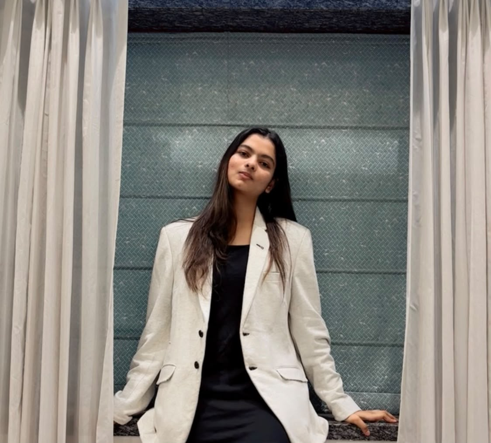

Sejal Yenage
B.Tech student at the Indian Institute of Technology Jodhpur, working at the intersection of structural engineering, computational mechanics, finite element analysis, and data-driven modelling.

Academic Work
Building a strong foundation in structural mechanics, computational analysis, and infrastructure engineering.
Civil & Infrastructure Engineering
Indian Institute of Technology Jodhpur
Engineering through mechanics, computation & design.
Coursework spanning structural analysis, solid mechanics, fluid mechanics, reinforced concrete design, steel structures, structural dynamics, computational methods and smart infrastructure.
Publications
Research in computational structural mechanics and advanced cold-formed steel systems.
Structural Behaviour and Design of Edge-Stiffened Perforated High-Strength Cold-Formed Steel Channel Columns
Completed the journal manuscript and currently preparing for submission. The work investigates buckling behaviour and design strength of perforated, edge-stiffened high-strength CFS columns.
The study examines the effects of perforations, edge stiffening and slenderness using nonlinear finite-element simulations, with implications for improved design of lightweight and structurally reliable CFS members.
Numerical Modelling and Design of Edge-Stiffened Perforated High-Strength Steel Channel Columns
Presented at the 10th International Congress on Computational Mechanics and Simulation (ICCMS 2025), IIT Bhubaneswar.
Research
Computational approaches to structural behaviour.
Building structures.
Understanding behaviour.
Investigating how geometry, imperfections, material behaviour and loading influence structural response.
Computational approaches to structural behaviour.
Combining finite-element modelling, numerical methods, automation and machine learning to develop efficient engineering workflows.
Research Experience
Research experience in progression — from computational mechanics and finite-element modelling to data-driven structural design.
PROJECT IMAGE
Structural Behaviour and Design of Edge-Stiffened Perforated High-Strength Cold-Formed Steel Channel Columns
Journal Research
- Completed the journal manuscript and currently preparing for submission; investigated buckling behaviour and design strength of perforated, edge-stiffened high-strength CFS columns.
- Studied perforations, edge stiffening and slenderness using extensive ABAQUS simulations, highlighting the need to update AISI S100 provisions for perforated high-strength CFS members.
- Developed insights towards lighter, more efficient and structurally reliable CFS design for sustainable construction.
IMAGE
NUS Singapore Research Intern
Dr. Meng Xin
Geometric Imperfection Modeling of CHS: Machine Learning and Extension to Additive Manufacturing
- Developed 3D geometric imperfection models for Circular Hollow Sections (CHS) using controlled wave numbers, amplitudes, and phase parameters.
- Automated Python–ABAQUS finite-element simulations and Static Riks analyses, generating large-scale datasets for machine-learning-based prediction.
- Extended the imperfection modelling framework to additively manufactured (3D-printed) materials, enabling data-driven investigation of manufacturing-induced geometric imperfections.
IMAGE
Machine Learning-Based Design and Optimization of Reinforced Concrete Beams
Data-Driven Structural Design
- Generated 17.6M+ IS 456:2000-based RCC beam design cases, incorporating span, loading, geometry, material grades, exposure, cover and reinforcement parameters.
- Trained and compared Random Forest, XGBoost, Gradient Boosting and Neural Network models for predicting beam design outcomes and structural performance.
- Developed a data-driven design pipeline integrating automated code-based design, feature engineering, model validation and performance comparison.
VISUAL / GUI
Computational Structural Analysis Using Python with Direct Stiffness Method
Course Project · Advanced Structural Analysis
- Implemented a Python-based Direct Stiffness Method solver with GUI for 2D plane-frame analysis.
- Integrated NumPy-based global stiffness assembly, DOF mapping, boundary conditions and structural response calculations.
- Validated numerical results against STAAD.Pro for representative plane-frame structures.
VISUAL
Prediction of Concrete Compressive Strength Using Artificial Neural Networks
Course Project · Smart Infrastructure Engineering
- Developed a TensorFlow/Keras ANN to predict concrete compressive strength from mix proportions and age.
- Preprocessed and normalized data; trained and evaluated models across architectures, activation functions and optimizers.
- Compared predicted strength against actual experimental values.
IMAGE
Research Intern, IIT Bombay
ISRO-Collaborative Project · Dr. Tushar Kanti Mandal
Finite Element Modeling of Bolted Joints under Static and Dynamic Loads
- Conducted a computational study for a planned ISRO-collaborative project on the static and dynamic behaviour of bolted joints.
- Performed nonlinear ABAQUS contact analysis to investigate fatigue and self-loosening behaviour under dynamic loading.
- Automated Python-based post-processing and studied pitch difference and interference-fit parameters for improved fatigue life and anti-loosening performance.
IMAGE
5D BIM Modeling and Construction Planning
Dr. Ravi Prakash · Project
- Modelled a 10-storey building in Autodesk Revit and implemented 5D BIM workflows for quantity takeoff and cost estimation.
- Automated BIM data extraction and quantity workflows using Dynamo, integrating construction scheduling and cost planning.
Selected Projects
From structural analysis to data-driven design.
Direct Stiffness Method
Python-based computational structural analysis framework with GUI implementation and validation against STAAD.Pro.
RCC Beam Design & Cost Optimization
Data-driven reinforced concrete beam design using IS 456-based automated generation, machine learning and optimization-oriented analysis.
5D BIM Construction Planning
Integrated Revit modelling, quantity extraction, construction planning and cost estimation for a 10-storey building.
Geometric Imperfection Modelling
Parametric modelling and finite-element investigation of geometric imperfections in structural members.
Technical Skills
Tools for modelling, analysis and computation.
Finite Element & Structural Analysis
Nonlinear Analysis · Contact Mechanics · Buckling Analysis
Programming & Data
Machine Learning · Data Processing · Automation
Engineering & BIM
Quantity Takeoff · Cost Estimation · Construction Planning
Codes & Standards
Structural Design · Cold-Formed Steel
Extracurriculars
Music & Cultural Activities
Core member of Sangam, the music society at IIT Jodhpur, and lead female singer. Participated in and contributed to cultural performances and activities.
Volunteer — Inner Wheel International
Contributed to women’s empowerment, environmental sustainability, community health and literacy initiatives through outreach and social welfare activities.
Leadership & Sponsorship Outreach
Assistant Head – Marketing, IGNUS’25. Contacted and coordinated with companies to develop sponsorship opportunities and support festival outreach.
Certificates
Selected certifications, participation and academic recognition.
Departmental Rank 1
Civil & Infrastructure Engineering · IIT Jodhpur
ICCMS 2025
Presentation of research on numerical modelling and design of edge-stiffened perforated high-strength steel channel columns.
Future Vision
Structures that are lighter, stronger & smarter.
Interested in advancing structural engineering through computational mechanics, high-fidelity simulation, and data-driven design.
From numerical models to engineering decisions.
My long-term goal is to bridge mechanics-based modelling with computational and machine-learning methods to develop more efficient and reliable structural systems.
Let's
connect.
For research collaboration, academic opportunities, projects or professional discussions.